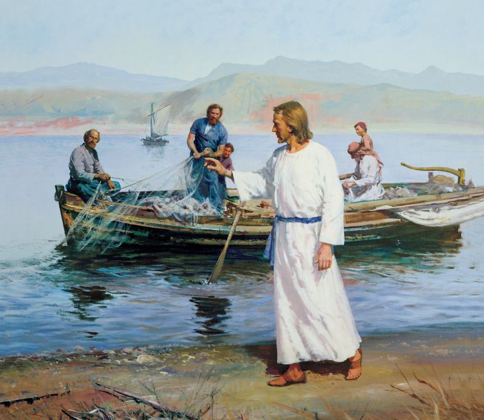
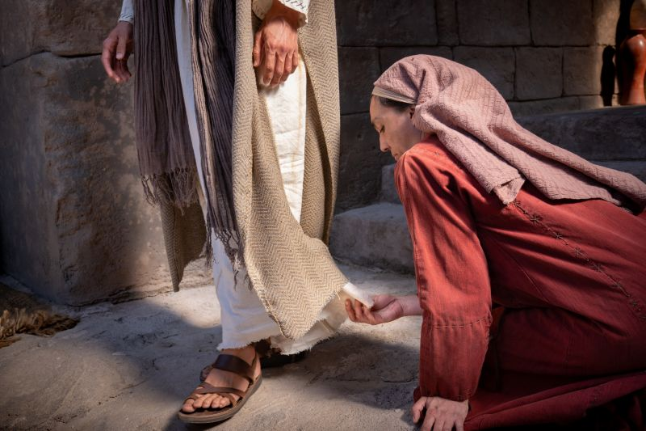
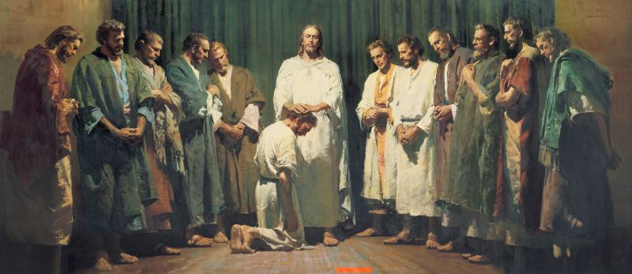
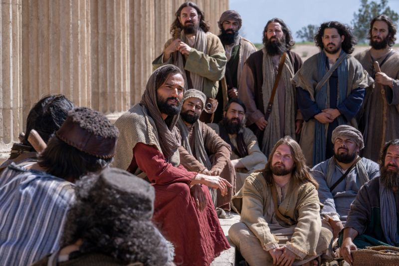

I love this picture because of the juxtaposition of the incredible magnitude of what these fishermen are about to be called to do and the mundane daily task that they're involved in. I think sometimes we may get caught up in the daily grind of life and forget to listen to the call of the Lord.

I love this story. I've felt a lot like this woman sometimes when I have a lot going on. I feel like either due to my mistakes, or due to the seeming insignificance of my problems, I've sometimes hesitated to seek help from the Lord. This picture is a great reminder that not only will our Savior help us, but He's always there and willing to help.

This picture has always stood out to me because of the importance of Christ calling his apostles. This event gave us the structure that would give us the start of the church we all need.

I love this picture because it makes me think of Christ teaching us in the temples we have. It must have been so cool to be there and to listen to Christ teaching.